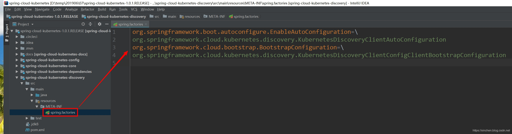
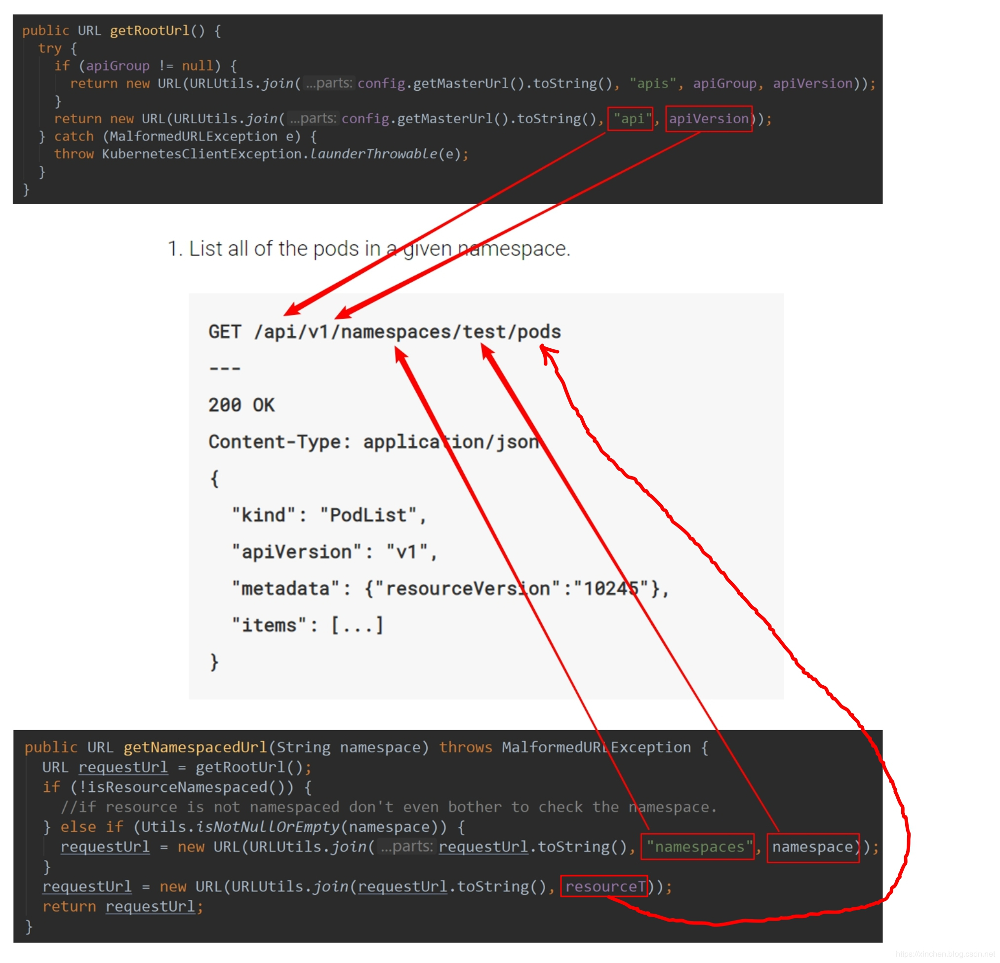
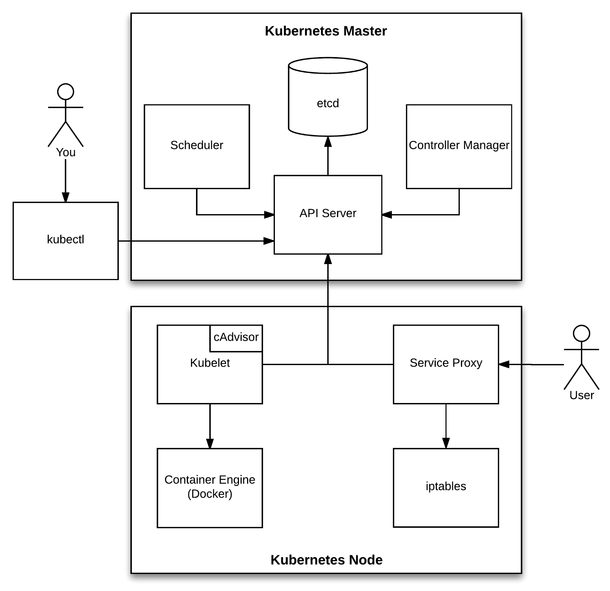
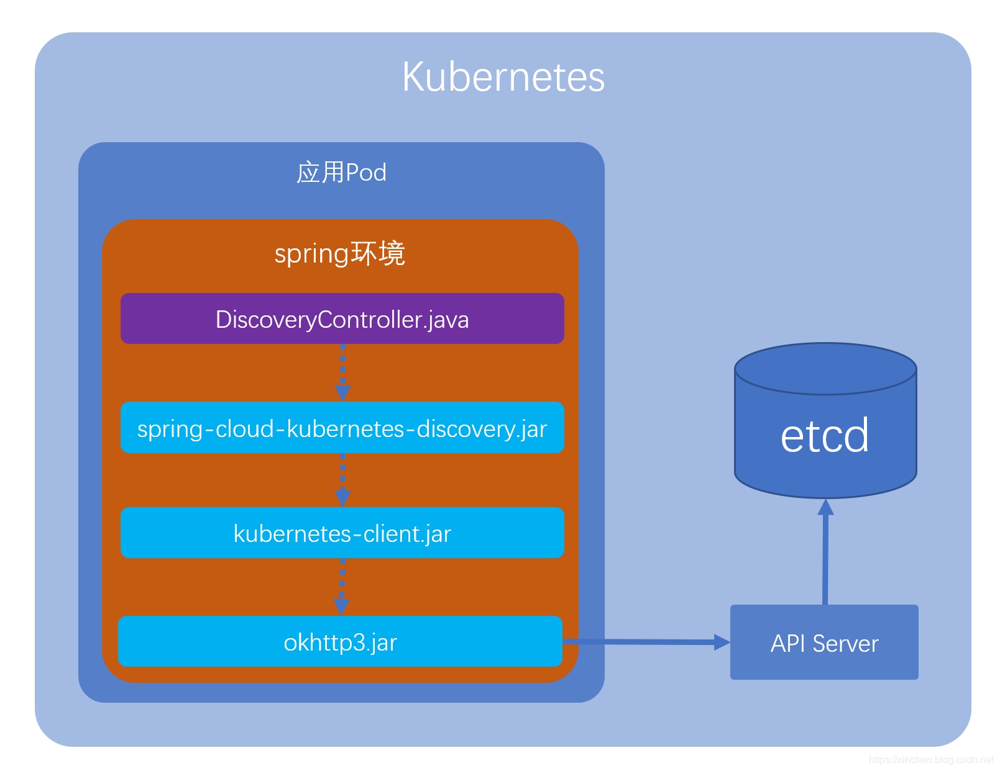

原文连接:https://www.cnblogs.com/bolingcavalry/p/11452643.html
在《你好spring-cloud-kubernetes》一文中，对spring-cloud-kubernetes这个SpringCloud官方kubernetes服务框架有了基本了解，今天来小结此框架涉及的关键技术，为后面的深入学习做准备；
系列文章列表
本文是《spring-cloud-kubernetes实战系列》的第三篇，全文链接如下：
- 《spring-cloud-kubernetes官方demo运行实战》
- 《你好spring-cloud-kubernetes》
- 《spring-cloud-kubernetes背后的三个关键知识点》
- 《spring-cloud-kubernetes的服务发现和轮询实战(含熔断)》
- 《spring-cloud-kubernetes与SpringCloud Gateway》
- 《spring-cloud-kubernetes与k8s的configmap》
概览
总结下来有三个关键知识点需要深入理解：
- DiscoveryClient是个接口，对应的实现类是哪个?
- discoveryClient.getServices()方法取得了kubernetes的service信息，这背后的机制是什么？java应用是怎样取得所在kubernetes的服务信息的？
- kubernetes的service信息存在哪里？如何将这些信息给出去？
接下来我们逐一分析每个知识点；
DiscoveryClient接口的实现类实例从何而来
先来回顾一下上一章的DiscoveryController.java的内容：
@RestController
public class DiscoveryController {
@Autowired
private DiscoveryClient discoveryClient;
/**
* 探针检查响应类
* @return
*/
@RequestMapping("/health")
public String health() {
return "health";
}
/**
* 返回远程调用的结果
* @return
*/
@RequestMapping("/getservicedetail")
public String getUri(
@RequestParam(value = "servicename", defaultValue = "") String servicename) {
return "Service [" + servicename + "]'s instance list : " + JSON.toJSONString(discoveryClient.getInstances(servicename));
}
/**
* 返回发现的所有服务
* @return
*/
@RequestMapping("/services")
public String services() {
return this.discoveryClient.getServices().toString()
+ ", "
+ new SimpleDateFormat("yyyy-MM-dd HH:mm:ss").format(new Date());
}
}上述代码中，我们并没有写创建DiscoveryClient实例的代码，discoveryClient从何而来？
这一切，要从DiscoveryController.java所在项目的pom.xml说起；
- 在pom.xml中，有对spring-cloud-kubernetes框架的依赖配置：
<dependency>
<groupId>org.springframework.cloud</groupId>
<artifactId>spring-cloud-kubernetes-discovery</artifactId>
<version>1.0.1.RELEASE</version>
</dependency>- 打开spring-cloud-kubernetes-discovery的源码，地址是：https://github.com/spring-cloud/spring-cloud-kubernetes/tree/master/spring-cloud-kubernetes-discovery ，在这个工程中发现了文件spring.factories：
 - spring容器启动时，会寻找classpath下所有spring.factories文件(包括jar文件中的)，spring.factories中配置的所有类都会实例化，我们在开发springboot时常用到的XXX-starter.jar就用到了这个技术，效果是一旦依赖了某个starter.jar很多功能就在spring初始化时候自动执行了（例如mysql的starter，启动时会连接数据库），关于此技术的详情，请参考以下三篇文章：
《自定义spring boot starter三部曲之一：准备工作》
《自定义spring boot starter三部曲之二：实战开发》
《自定义spring boot starter三部曲之三：源码分析spring.factories加载过程》 - spring.factories文件中有两个类：KubernetesDiscoveryClientAutoConfiguration和KubernetesDiscoveryClientConfigClientBootstrapConfiguration都会被实例化；
- 先看KubernetesDiscoveryClientConfigClientBootstrapConfiguration，很简单的源码，KubernetesAutoConfiguration和KubernetesDiscoveryClientAutoConfiguration这两个类会被实例化：
/**
* Bootstrap config for Kubernetes discovery config client.
*
* @author Zhanwei Wang
*/
@Configuration
@ConditionalOnProperty("spring.cloud.config.discovery.enabled")
@Import({ KubernetesAutoConfiguration.class,
KubernetesDiscoveryClientAutoConfiguration.class })
public class KubernetesDiscoveryClientConfigClientBootstrapConfiguration {
}- 在KubernetesAutoConfiguration的源码中，会实例化一个重要的类：DefaultKubernetesClient，如下：
@Bean
@ConditionalOnMissingBean
public KubernetesClient kubernetesClient(Config config) {
return new DefaultKubernetesClient(config);
}- 再看KubernetesDiscoveryClientAutoConfiguration源码，注意kubernetesDiscoveryClient方法，这里面实例化了DiscoveryController所需的DiscoveryClient接口实现，还要重点关注的地方是KubernetesClient参数的值，是上面提到的DefaultKubernetesClient对象：
@Bean
@ConditionalOnMissingBean
@ConditionalOnProperty(name = "spring.cloud.kubernetes.discovery.enabled", matchIfMissing = true)
public KubernetesDiscoveryClient kubernetesDiscoveryClient(KubernetesClient client,
KubernetesDiscoveryProperties properties,
KubernetesClientServicesFunction kubernetesClientServicesFunction,
DefaultIsServicePortSecureResolver isServicePortSecureResolver) {
return new KubernetesDiscoveryClient(client, properties,
kubernetesClientServicesFunction, isServicePortSecureResolver);
}- 至此，第一个问题算是弄清楚了：我们编写的DiscoveryController类所需的DiscoveryClient接口实现类是KubernetesDiscoveryClient，用到的是spring规范中的spring.factories
- 另外有一点很重要，下面要用到的：KubernetesDiscoveryClient有个成员变量是KubernetesClient，该变量的值是DefaultKubernetesClient实例；
接下来看第二个问题；
java应用怎么能取得所在kubernetes的服务信息
- 看看DiscoveryController是如何获取所在kubernetes的服务信息的：
@RequestMapping("/services")
public String services() {
return this.discoveryClient.getServices().toString()
+ ", "
+ new SimpleDateFormat("yyyy-MM-dd HH:mm:ss").format(new Date());
}如上所示，discoveryClient.getServices()方法返回了所有kubernetes的服务信息；
- discoveryClient对应的类是spring-cloud-kubernetes项目的KubernetesDiscoveryClient.java，看方法：
public List<String> getServices(Predicate<Service> filter) {
return this.kubernetesClientServicesFunction.apply(this.client).list().getItems()
.stream().filter(filter).map(s -> s.getMetadata().getName())
.collect(Collectors.toList());
}这段代码的关键在于this.kubernetesClientServicesFunction.apply(this.client).list()，先看KubernetesClientServicesFunction实例的初始化过程，在KubernetesDiscoveryClientAutoConfiguration类中：
@Bean
public KubernetesClientServicesFunction servicesFunction(
KubernetesDiscoveryProperties properties) {
if (properties.getServiceLabels().isEmpty()) {
return KubernetesClient::services;
}
return (client) -> client.services().withLabels(properties.getServiceLabels());
}KubernetesClientServicesFunction是个lambda表达式，用于KubernetesClient的时候，返回KubernetesClient.services()的结果，如果指定了标签过滤，就用指定的标签来做过滤（也就是kubernetes中的标签选择器的效果）
因此，数据来源其实就是上面的this.client，调用其services方法的返回结果；
- KubernetesDiscoveryClient.getServices方法中的this.client是什么呢？分析前面的问题时已经提到过了，就是DefaultKubernetesClient类的实例，所以，此时要去看DefaultKubernetesClient.services方法，发现client是ServiceOperationsImpl实例：
@Override
public MixedOperation<Service, ServiceList, DoneableService, ServiceResource<Service, DoneableService>> services() {
return new ServiceOperationsImpl(httpClient, getConfiguration(), getNamespace());
}- 接着看ServiceOperationsImpl.java，我们关心的是它的list方法，此方法在父类BaseOperation中找到：
public L list() throws KubernetesClientException {
try {
HttpUrl.Builder requestUrlBuilder = HttpUrl.get(getNamespacedUrl()).newBuilder();
String labelQueryParam = getLabelQueryParam();
if (Utils.isNotNullOrEmpty(labelQueryParam)) {
requestUrlBuilder.addQueryParameter("labelSelector", labelQueryParam);
}
String fieldQueryString = getFieldQueryParam();
if (Utils.isNotNullOrEmpty(fieldQueryString)) {
requestUrlBuilder.addQueryParameter("fieldSelector", fieldQueryString);
}
Request.Builder requestBuilder = new Request.Builder().get().url(requestUrlBuilder.build());
L answer = handleResponse(requestBuilder, listType);
updateApiVersion(answer);
return answer;
} catch (InterruptedException | ExecutionException | IOException e) {
throw KubernetesClientException.launderThrowable(forOperationType("list"), e);
}
}展开上面代码的handleResponse方法，可见里面是一次http请求，至于请求的地址，可以展开getNamespacedUrl()方法，里面调用的getRootUrl方法如下：
public URL getRootUrl() {
try {
if (apiGroup != null) {
return new URL(URLUtils.join(config.getMasterUrl().toString(), "apis", apiGroup, apiVersion));
}
return new URL(URLUtils.join(config.getMasterUrl().toString(), "api", apiVersion));
} catch (MalformedURLException e) {
throw KubernetesClientException.launderThrowable(e);
}
}可见最终的地址应该是：xxxxxx/api/v1或者xxxxxx/apis/xx/v1这样的字符串。
这样的字符串意味着什么呢？这是访问kubernetes的API Server时用到的URL标准格式，有关API Server服务的详情请参考官方文档，地址是：https://kubernetes.io/docs/reference/using-api/api-concepts/
如下图，用OperationSupport类的源码和官方文档的URL截图做个对比，大家就一目了然了：

- 还剩个小问题，上图中，OperationSupport类的成员变量resourceT是什么值？官方文档示例中是"pods"，在获取service的时候又该是多少呢？顺着源码一路找下去，找到了类的构造方法，如下所示，第五个参数就是resourceT，这里直接被写死为"services"：
public ServiceOperationsImpl(OkHttpClient client, Config config, String apiVersion, String namespace, String name, Boolean cascading, Service item, String resourceVersion, Boolean reloadingFromServer, long gracePeriodSeconds, Map<String, String> labels, Map<String, String> labelsNot, Map<String, String[]> labelsIn, Map<String, String[]> labelsNotIn, Map<String, String> fields) {
super(client, config, null, apiVersion, "services", namespace, name, cascading, item, resourceVersion, reloadingFromServer, gracePeriodSeconds, labels, labelsNot, labelsIn, labelsNotIn, fields);
}至此，第二个问题“controller中用到的kubernetes服务数据从何而来"已经清楚了：最终是调用okhttp的newCall方法向kubernetes的API Server发起http请求，获取service资源的数据列表；
接下来，该最后一个问题了；
API Server收到请求后做了什么？
关于API Server如何响应各类http请求，本文只做一些简单的说明，详细信息还请参考官方文档，地址是：https://kubernetes.io/docs/reference/command-line-tools-reference/kube-apiserver/
如下图所示，在kubernetes环境中，pod、service这些资源的数据都存储在etcd，任何服务想要增删改查etcd的数据，都只能通过向API Server发起RestFul请求的方式来完成，咱们的DiscoveryController类获取所有service也是发请求到API Server，由API Server从etcd中取得service的数据返回给DiscoveryController：

如果您想弄清楚service数据在etcd中如何存储的，可以参考《查看k8s的etcd数据》一文，亲自动手连接etcd查看里面的service内容；
至此，spring-cloud-kubernetes背后的三个关键知识点都已经学习了，下图算是对这些问题的一个小结：

希望以上的分析总结能对您有参考作用，由于对基本原理都已经了解，后面的spring-cloud-kubernetes实战可以更顺畅，也能从原理出发继续深入的分析和学习。
欢迎关注我的公众号：程序员欣宸